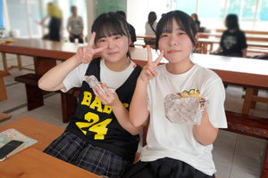
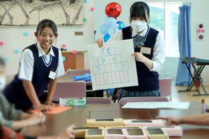
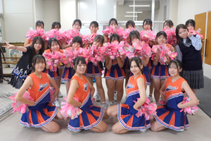

英明祭で「EIMEI 校内あるきミッケ」
情報コースとIT・パソコン部が、校内に散りばめたチェックポイントを巡る企画を実施しました。
参加者は学校の中を歩き、各所に用意されたミッションへ挑戦しました。授業や部活動で扱う情報技術を、初めて見る人も参加できる遊びへ組み直し、操作方法と面白さまで伝える発表になりました。



活動の記録
参加者は学校の中を歩き、各所に用意されたミッションへ挑戦しました。授業や部活動で扱う情報技術を、初めて見る人も参加できる遊びへ組み直し、操作方法と面白さまで伝える発表になりました。
外部の条件へ挑む
「英明祭で「EIMEI 校内あるきミッケ」」では、応募条件、制限時間、採点・審査の基準が決められています。
授業で得た力を、初めての問題や外部審査の中で試した記録です。
授業で重なる分野
プログラミング大会では手順と正確さ、作品公募では目的と伝わり方が問われます。
情報システム系と情報クリエイト系、それぞれの学びが成果へつながります。
情報コースの学びへ
制作・表現を、授業の次へつなぐ
情報を目立たせるだけでなく、誰へ何を伝えるかを決め、文字・画像・色・配置を組み合わせます。外部審査や来場者の反応が、次の修正点になります。